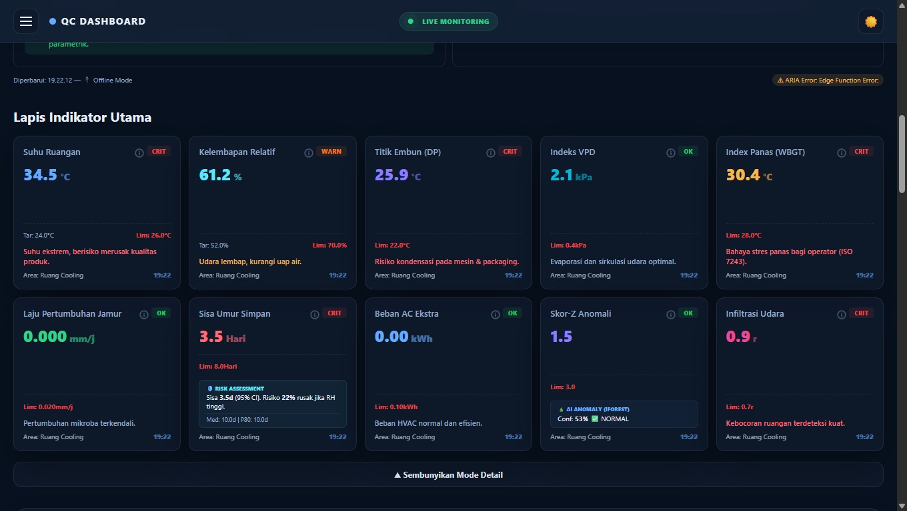

IoT Factory Environment Monitor
Cooling and packing room conditions were checked by walking there and writing in a notebook — problems discovered hours after they occurred. Built a sensor network that monitors both rooms in real time and generates a 6-step action plan the moment something goes wrong.
From Manual Logbook to Live Intelligence
Manual Logbooks Can’t Protect Products
Cooling Room and Packing Room conditions were checked every few hours by operators writing numbers in a logbook. By the time a problem was recorded, it was already too late.
Two Rooms, Different Risk Profiles
Cooling Room and Packing Room have fundamentally different temperature and humidity requirements — and different failure modes. The dashboard treats each zone independently.
Live in Production
Actual dashboard running on the factory floor — 10 derived metrics displayed in real-time per zone, with severity badges and AI anomaly scores. UI in Bahasa Indonesia for non-technical operators.

Screenshot uses dummy sensor values for confidentiality — UI layout, alert logic, and derived metrics reflect the actual production build.
10 Derived Metrics from One Reading
Every T+RH sensor pair is immediately enriched by a computation pipeline running off the main thread in a Web Worker — so the UI never freezes. At default 30-min interval: ~48 readings/day per zone, ~1,440/month. Shorter intervals generate proportionally more — the Worker handles it without blocking the UI regardless of volume.
I²C → configurable interval
math.ts · off-thread
shelf life · mold · WBGT · …
never freezes
| Metric | Scientific Basis | Factory Use |
|---|---|---|
| Dew Point | Arden Buck equation | Condensation risk on packaging |
| WBGT (Indoor) | ISO 7243 | Heat stress risk for operators |
| VPD | Buck equation (Ew) | Vapour pressure deficit — fogging risk |
| Shelf Life | Arrhenius Q10 acceleration | Estimated days product remains safe |
| Mold Rate | Cardinal Gamma (Rosso et al.) | Mold growth rate from Aw + temperature |
| Mahalanobis Z | Multivariate statistics | 2D anomaly (T+RH) via 12-point window |
| Isolation Forest | Liu, Ting & Zhou (2008) | Non-parametric anomaly — 100 trees, seeded PRNG |
| EWMA Chart | Roberts (1959) / Montgomery SPC | Statistical Process Control with time-varying control limits |
| Survival Curve | Cumulative hazard (Arrhenius) | Probability product survives over time |
| Holt Forecast | Linear trend + harmonic | 30-minute condition projection |
ARIA — AI Environment Analyst
Advanced Ruang Intelligence Analyst — ruang is Indonesian for “room,” a deliberate nod to the factory context. Converts all 10 computed metrics into a structured action plan — designed to never fail completely, even when the LLM is unavailable.
Model switches automatically based on current severity — balancing accuracy vs. cost.
If Groq is unavailable (network error, rate limit), a rule-based engine generates equivalent analysis from the computed metrics — no dashboard downtime.
What ARIA Sends to the API
Rich aggregated context — no raw identifying data, no operator PII, no supplier names.
Cooling Room temperature has risen 2.1°C in the last 15 minutes. Shelf life estimate dropped from 3.0 to 1.8 days. Mold growth rate at 0.043/hr — active colonization risk.
How the System Connects
From physical sensor to AI action plan — each layer has one clear responsibility. No component reads raw data it doesn’t own.
useMemo before rendering, then reused across all chart series. Prevents recalculating SPC control limits on every render cycle.End-to-End Data Flow
From SHT31 sensor reading to AI-generated action plan — every layer of the pipeline.